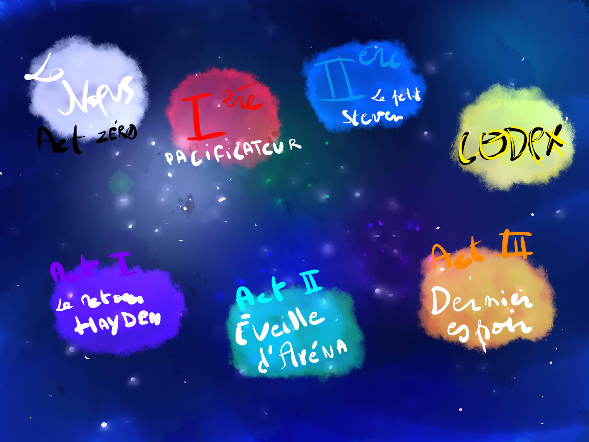
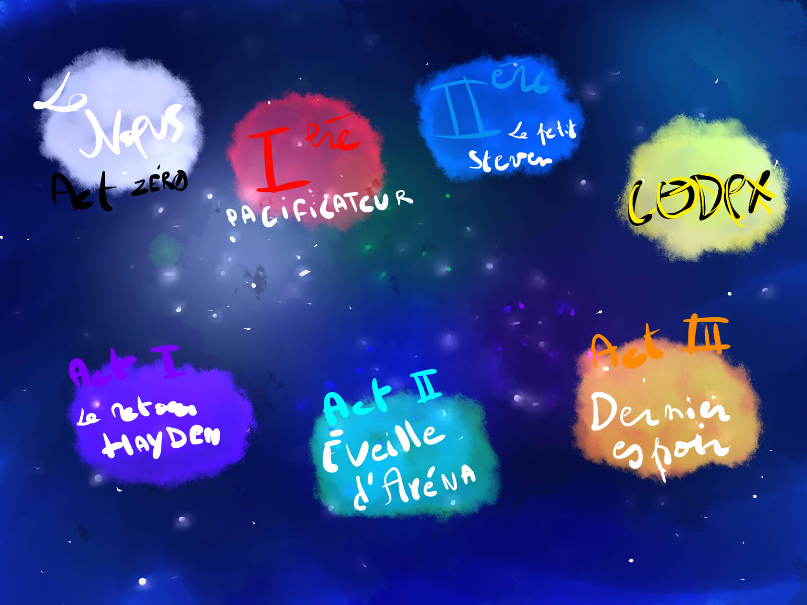
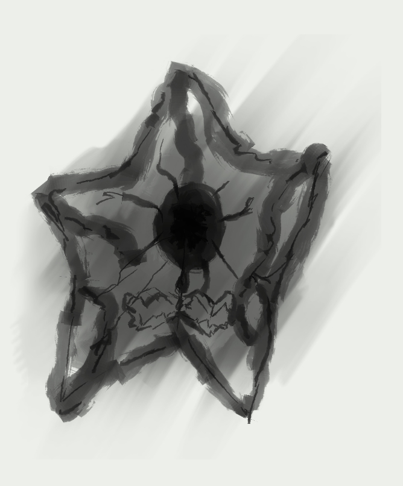
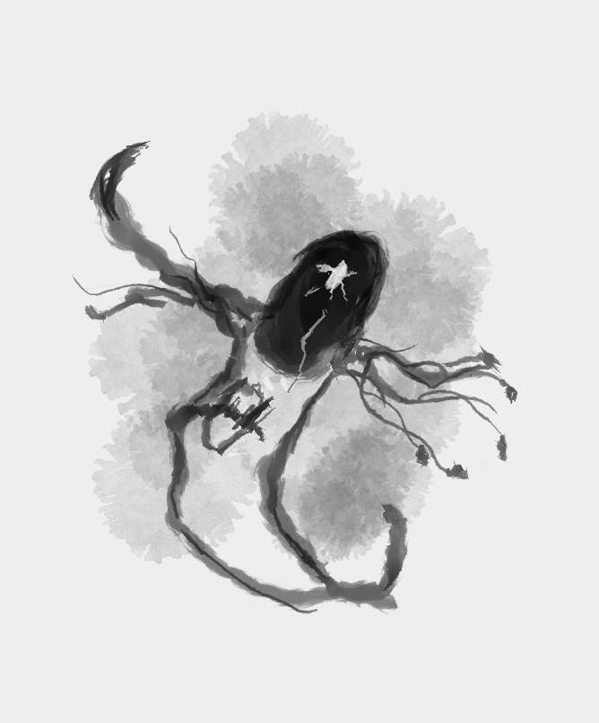

Histoire - contexte
Notre histoire
Promis, ça ne sera pas long. Notre site réédifica a vu le jour en avril 2022, pour un projet d'étude. Son nom lui vient de réédifica qui signifie reconstruire, car nous créons ensemble une histoire, l'Histoire de Réédifica.
L'univers présenté est tout droit sorti de la BD Chronique of Celestiens. Cette œuvre, toujours en cours, présente la vie d'un groupe de Célestiens (Combattant de la lumière).
On y découvre leurs péripéties. Comment de solides amitiés vont naître ? De puissants pouvoirs seront développés ou encore leurs interventions épiques, afin de déjouer les sinistres plans des antagonistes

 



Et réédifica dans tout ça ? Nous avons décidé pour ce forum de présenter un des arcs narratifs antérieur à l'arc principal et c'est pour cela que vous êtes là !
L'arc du Pacificateur
Dans notre univers, toute chose à sa place. Tout est ordonné. L'équilibre persiste et dans le domaine de la magie, ce sont les illustres qui en sont les ministères. Grâce à eux, la magie et dans son harmonie complète, mais cette sérénité ne persista pas. Arena - Illustre de la destruction, rompu l'ordre, sous les conseils d'un être encore mystérieux à ce jour. Elle prit l'objet le plus convoité au Panthéon des illustres et libéra Les Ténèbres, dévorant sur tout l'univers.
Si les autres illustrent l'ont abandonné dans sa folie. Piter - Illustre de l'offrande, persiste à vouloir la sauver. Il tenta seul, mais en vain. Il décida alors de s'enfuir... Attristé, désespéré, vagabond, il trouva sur sa route, le peuple des Célestiens. Un peuple bienveillant, qui ignorerait le statut que portait cet homme.
Il fut accueilli, restauré et se fit des amis loin de son trône. Mais la réalité le rattrape, les ténèbres sont en route, en direction de la contrée qu'il a accueilli. Personne ne doit mourir, ils se les jurés. Il partit au front et comprit très vite qu'il n'était plus tout seul.
C'est là qu'une idée lui vient. Il sait que les lois de la magie l'interdit de se confronter aux ténèbres, mais en revanche, ce n'est pas le cas des autres. C'est ainsi que naît le don, celui de repousser les ténèbres. Capable de maîtriser n'importe quel type de magie, de les combiner, de les fusionner, d'en créer de nouveaux et tout cela à la seule force de la volonté.
Maintenant, les Célestiens sont munis du don, mais ils sont peu nombreux. Pour pallier, Le don fut À la portée de tous ceux qui en étaient dignes. On appela le don, le don du Célestien car ils étaient les premiers à l'avoir obtenu. Piter prit le nom du pacificateur, créateur du mouvement. À présent, la paix est peut-être possible.
Votre histoire
Tu viens d'obtenir le don, on t'a envoyé au bercail afin de rejoindre les rangs des Célestins combattants. Nous avons besoin de toi pour faire reculer les ténèbres. Sur ta route, de nombreuses créatures émaneront des ombres.
 Tu fais partie de la première ère des Célestins. Quand tu commences, tu as 1 pouvoir au choix. Lorsque tu montes en grade, tu obtiens de nouveau pouvoir. Au maximum 3, de quoi te rendre très puissant.
- Feu : Utile quand il fait froid. Permet de s'éclairer quand il fait nuit et surtout brûler tes ennemis !
- Foudre : Parfait pour des attaques à distance. En plus de faire très mal, déplacement instantané sur 250 m.
- Glace : Utile quand il fait chaud. Permet de geler tes ennemis, de les ralentir, de créer des icebergs et par conséquent faire sombrer n'importe quel Titanic.
- Nature : Si tu es végétarien, tu vas aimer, faire pousser des légumes et des fruits. Mais également invoque de la terre (Racines, lianes, Ronces, Feuilles tranchantes, Spores toxiques et pour tes alliés Plante médicinale).
- Spectral : Traverser la matière, drainer l'énergie vital (la vie) des autres. Encaisser les attaques physiques.
- Vent : Génère de l'oxygène. Capacité de vole. Créateur de bourrasque et de tornade.
D'autres pouvoirs sont en cours de ajout.